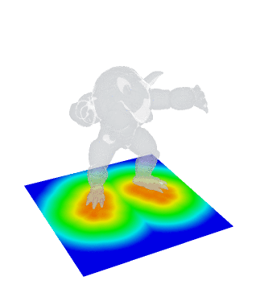

Distance Queries¶
The RaycastingScene class in Open3D provides a set of distance queries, which can be used to convert triangle meshes into implicit functions, query the distance to the surface or determine if a point is inside a mesh.

In this tutorial we show how to generate these queries and produce pupular implicit representations from meshes as used in geometry processing and 3D machine learning.
Converting a mesh to an implicit representation¶
Initialization
As the first step we initialize a RaycastingScene with a (closed) triangle mesh
[2]:
# Load mesh and convert to open3d.t.geometry.TriangleMesh
armadillo_data = o3d.data.ArmadilloMesh()
mesh = o3d.io.read_triangle_mesh(armadillo_data.path)
mesh = o3d.t.geometry.TriangleMesh.from_legacy(mesh)
# Create a scene and add the triangle mesh
scene = o3d.t.geometry.RaycastingScene()
_ = scene.add_triangles(mesh) # we do not need the geometry ID for mesh
[Open3D INFO] Downloading https://github.com/isl-org/open3d_downloads/releases/download/20220201-data/ArmadilloMesh.ply
[Open3D INFO] Downloaded to /home/runner/open3d_data/download/ArmadilloMesh/ArmadilloMesh.ply
Computing distances and occupancy for a single point
RaycastingScene directly provides functions to compute the unsigned and signed distance from a point to the mesh surface. It also provides a function to compute the occupancy at a query point.
[3]:
query_point = o3d.core.Tensor([[10, 10, 10]], dtype=o3d.core.Dtype.Float32)
# Compute distance of the query point from the surface
unsigned_distance = scene.compute_distance(query_point)
signed_distance = scene.compute_signed_distance(query_point)
occupancy = scene.compute_occupancy(query_point)
While the unsigned distance can always be computed, the signed distance and the occupancy are only valid if the mesh is watertight and the inside and outside are clearly defined. The signed distance is negative if the query point is inside the mesh. The occupancy is either 0 for points outside the mesh and 1 for points inside the mesh.
In this example our mesh is watertight and we can see that the query point is inside the mesh because of the signed distance and the occupancy values.
[4]:
print("unsigned distance", unsigned_distance.numpy())
print("signed_distance", signed_distance.numpy())
print("occupancy", occupancy.numpy())
unsigned distance [7.8694816]
signed_distance [-7.8694816]
occupancy [1.]
Computing distances for multiple points and grids
RaycastingScene allows multiple queries at once. For instance, we ca n pass a [N,3] Tensor with N query points which can be used to randomly sample a volume for training implicit neural representations in machine learning.
[5]:
min_bound = mesh.vertex.positions.min(0).numpy()
max_bound = mesh.vertex.positions.max(0).numpy()
N = 256
query_points = np.random.uniform(low=min_bound, high=max_bound,
size=[N, 3]).astype(np.float32)
# Compute the signed distance for N random points
signed_distance = scene.compute_signed_distance(query_points)
RaycastingScene allows to organize query points with an arbitrary number of leading dimensions. To query the signed distance for a grid we can do the following
[6]:
xyz_range = np.linspace(min_bound, max_bound, num=32)
# query_points is a [32,32,32,3] array ..
query_points = np.stack(np.meshgrid(*xyz_range.T), axis=-1).astype(np.float32)
# signed distance is a [32,32,32] array
signed_distance = scene.compute_signed_distance(query_points)
# We can visualize a slice of the distance field directly with matplotlib
plt.imshow(signed_distance.numpy()[:, :, 15])
[6]:
<matplotlib.image.AxesImage at 0x7fba43c8bc50>
The same procedure works for RaycastingScene.compute_distance and RaycastingScene.compute_occupancy, which can be used to generate the unsigned distance and occupancy fields.
Computing distances with closest point queries¶
The distance functions are built on top of the compute_closest_points() function. In this part we will reimplement the signed distance and show how to make use of the additional information returned by the compute_closest_points() function.
Initialization
We first initialize a RaycastingScene with two triangle meshes. Both meshes are watertight and we will place them such that there are no intersections between them.
[7]:
cube = o3d.t.geometry.TriangleMesh.from_legacy(
o3d.geometry.TriangleMesh.create_box().translate([-1.2, -1.2, 0]))
sphere = o3d.t.geometry.TriangleMesh.from_legacy(
o3d.geometry.TriangleMesh.create_sphere(0.5).translate([0.7, 0.8, 0]))
scene = o3d.t.geometry.RaycastingScene()
# Add triangle meshes and remember ids
mesh_ids = {}
mesh_ids[scene.add_triangles(cube)] = 'cube'
mesh_ids[scene.add_triangles(sphere)] = 'sphere'
Computing the closest point on the surface
RaycastingScene.compute_closest_points() can compute the closest point on the surface with respect to a query point.
[8]:
query_point = o3d.core.Tensor([[0, 0, 0]], dtype=o3d.core.Dtype.Float32)
# We compute the closest point on the surface for the point at position [0,0,0].
ans = scene.compute_closest_points(query_point)
# Compute_closest_points provides the point on the surface, the geometry id,
# and the primitive id.
# The dictionary keys are
#. points
#. geometry_ids
#. primitive_ids
print('The closest point on the surface is', ans['points'].numpy())
print('The closest point is on the surface of the',
mesh_ids[ans['geometry_ids'][0].item()])
print('The closest point belongs to triangle', ans['primitive_ids'][0].item())
The closest point on the surface is [[-0.2 -0.2 0. ]]
The closest point is on the surface of the cube
The closest point belongs to triangle 0
To compute whether the point is inside or outside we can cast a ray starting at the query point and count the number of intersections
[9]:
rays = np.concatenate(
[query_point.numpy(),
np.ones(query_point.shape, dtype=np.float32)],
axis=-1)
intersection_counts = scene.count_intersections(rays).numpy()
# A point is inside if the number of intersections with the scene is even
# This sssumes that inside and outside is we ll defined for the scene.
is_inside = intersection_counts % 2 == 1
We can combine this into one function to create a special signed distance function with returns additional information:
[10]:
def compute_signed_distance_and_closest_goemetry(query_points: np.ndarray):
closest_points = scene.compute_closest_points(query_points)
distance = np.linalg.norm(query_points - closest_points['points'].numpy(),
axis=-1)
rays = np.concatenate([query_points, np.ones_like(query_points)], axis=-1)
intersection_counts = scene.count_intersections(rays).numpy()
is_inside = intersection_counts % 2 == 1
distance[is_inside] *= -1
return distance, closest_points['geometry_ids'].numpy()
We can use the function to create a grid with the distance and geometry id information
[11]:
# compute range
xyz_range = np.linspace([-2, -2, -2], [2, 2, 2], num=32)
# query_points is a [32,32,32,3] array ..
query_points = np.stack(np.meshgrid(*xyz_range.T), axis=-1).astype(np.float32)
sdf, closest_geom = compute_signed_distance_and_closest_goemetry(query_points)
# We can visualize a slice of the grids directly with matplotlib
fig, axes = plt.subplots(1, 2)
axes[0].imshow(sdf[:, :, 16])
axes[1].imshow(closest_geom[:, :, 16])
[11]:
<matplotlib.image.AxesImage at 0x7fba438c7450>